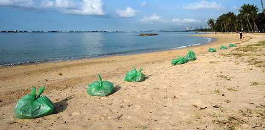
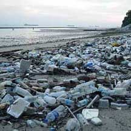
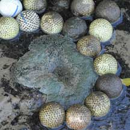
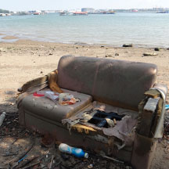
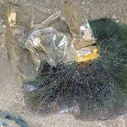

|
|
| index of concepts |
| Marine
debris: Killer litter updated Dec 2019 Why is there so much litter on the shore? Where does all this litter comes from? When we DON'T throw litter into a proper bin, it falls to the ground, goes into the drain, flushes into the canal, then into the sea. Most of the litter on our shores comes from landbased activities in Singapore and not necessarily from ships or boats or other countries. Why is the litter arranged in a line on the shore? Litter that floats comes in with the tide and is deposited on the high water mark. There is usually so much litter in the water, especially near shores frequented by people, that every tide brings in a new load of trash. Heavier trash that does not float were probably dumped on the shore or nearby. Killer Litter! Litter in the sea isn't just unsightly. Litter kills marine life.
Plastic everywhere: Plastic floats. In the ocean currents, plastic trash literally travels the world. Plastics
forever: Plastic litter lasts, and lasts, and lasts... |
|
 Our main beaches APPEAR clean only because of the armies of cleaners. Daily beach cleaning at East Coast Park, Apr 08. |
 A beach that is not regularly cleaned. Tanah Merah, Oct 09 |
|
| Where does the trash come from? Daily door-to-door trash collection is provided by the Maritime and Port Authority (MPA) to all ships parked in port. MPA also has several boats dedicated to removing trash from the port waters. MPA issues public data on the trash collected through the services they provide. However, no door-to-door trash collection is provided to any of the coastal fish farms licenced by Agri-food and Veterinary Authority (AVA, now the Singapore Food Agency, SFA) (119 as at Aug 2013). By providing this service, possibly 250 tonnes of trash (or more) will no longer be dumped into our waters every year as outlined in this letter sent to REACH. Despite a meeting with AVA in Mar 2014, to date, daily door-to-door trash collection is still not provided to coastal fish farms licenced by the authorities. |
 Golf balls at Berlayar Creek next to Keppel Golf Club, Mar 09 |
 Sofa dumped probably bynearby coastal fish farms. Pulau Ubin, Sep 14 |
 Plastic stuck to a sea anemone. Kusu Island, Jul 04 |
You CAN make a difference
|
| Photos of marine debris on Singapore shores |
| On wildsingapore
flickr for free download |
Links
|